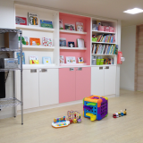

今、お母様方が求めていらっしゃるのは 安心してお子さまを任せられる人ではないでしょうか？
もっと社会にでたい、 勉強がしたい、 自分の時間がもちたい・・
そんなお母様とお子さまを応援しています。
ベビーシッター
各種場面に応じたシッターが忙しいあなたをサポート。助成金など各種特典もご紹介します。
子供を安心して誰かにたのめたら…
ご自宅で
シッターがお客様宅にお伺いします。お仕事の都合や、ご自身やご夫婦のプライベートなお時間が欲しいとき、ご自身の体調がすぐれない時など、様々な場面でお子様のお世話をさせて頂きます。
お出かけの時に
お客様宅以外で、保護者様に同行して、お子様をお世話します。お出掛け先や病院など保護者様に同行し、お子様の世話をお手伝いさせて頂きます。
ご自宅以外の場所でも
お客様宅以外の場所(児童館や、スポーツジム等)でお世話します。
例えば、児童館や図書館、冠婚葬祭時の会場でのお子様のお世話などをさせて頂きます。
例えば、児童館や図書館、冠婚葬祭時の会場でのお子様のお世話などをさせて頂きます。
ご病気の時や、病後に…
お子様の急な病気で、外出に連れて行けない場合のお世話をします。
お子様の体調がすぐれず、集団保育が難しい時にご自宅に伺い、お子様のお世話をさせて頂きます。
病気のお子様をお預かりする場合は、当社独自の規約がございますので、まずはお電話でご相談下さい。
（※指定感染病や高熱の場合はお預かり出来かねることがあります）

お子様の体調がすぐれず、集団保育が難しい時にご自宅に伺い、お子様のお世話をさせて頂きます。
病気のお子様をお預かりする場合は、当社独自の規約がございますので、まずはお電話でご相談下さい。
（※指定感染病や高熱の場合はお預かり出来かねることがあります）
送迎・二重保育に
保育園や学童保育へ送り迎えをします。また、引き続き自宅でのお世話や塾等へのお送りも致します。
急な残業で、幼稚園等にお子様のお迎えに行けない時などに、当社シッターがお子様を園にお迎えに行き、ご自宅で引き続きお世話をさせて頂きます。
急な残業で、幼稚園等にお子様のお迎えに行けない時などに、当社シッターがお子様を園にお迎えに行き、ご自宅で引き続きお世話をさせて頂きます。
グループ保育も
お母さんたちの会合の間などの保育、冠婚葬祭の会場・イベント会場での保育等。
協会の安全基準に沿った人数のスタッフが伺います。

協会の安全基準に沿った人数のスタッフが伺います。
家事が必要な場合も
お掃除・お食事の支度・お買い物・お洗濯など、必要な時に必要なサービスだけを選べます。
※家事代行を行いながらのシッティングは、お子様の安全上幼稚園年長以上に限らせて頂いております。
※家事代行を行いながらのシッティングは、お子様の安全上幼稚園年長以上に限らせて頂いております。
ご利用方法
1
お申し込み
お電話でお申込み下さい。
予約受付時間（月曜～土曜日）10：00～18：00関西地区 TEL 0797-77-5221
2
ご入金
会員制となっております。
ご都合を考慮した上で日時を決め、担当がお伺いいたします。入会申込書にご記入いただき、細かい打ち合わせさせていただきます。
3
ご予約
お電話でお申込みください。 原則として2日前までにご予約ください。
伝える事・利用日 ・利用時間
・子供に関する情報（名前、性別、生年月日、アレルギーの有無等）
・保育場所（送迎の有無）等
・どのようなお世話をしてほしいか。 ・食事やおやつについて
・お昼寝の時間や寝るときのくせ ・好きな遊び、おもちゃ
・しつけのポイント ・訪問者や電話の対応方法等
・保育園等へのお迎えや、おけいこ事への送迎についての方法等
4
ご利用
お約束の時間にシッターがご指定の場所に伺います。
（当社規定の身分証明書を携帯しております。）5
お支払い
毎月のご利用料金は稼動報告書をもとに末日締め翌月20日にお客様の口座から引き落とし、
もしくは指定銀行口座に振込料ご負担の上お振込みください。
もしくは指定銀行口座に振込料ご負担の上お振込みください。
料金
すみれ（一般コース）
ご指定の場所でのお子様のお世話。ご自宅でも、ご実家でも。散歩も。
保育園やその他の場所への送迎。
入会金 32,400円 ／ １家族
年会費 7,020円 ／ お子様1名（お二人目から半額）
ご指定の場所でのお子様のお世話。ご自宅でも、ご実家でも。散歩も。
保育園やその他の場所への送迎。
入会金 32,400円 ／ １家族
年会費 7,020円 ／ お子様1名（お二人目から半額）
●１時間あたりの料金
| 基本時間 | 早朝 7：00〜9：00 夜間 18：00〜22：00 |
深夜 22：00〜翌7：00 | |
| すみれ（一般コース） | 2,160円 | 2,376円 | 2,700円 |
●特別加算
※特別期間料金 ＜通常利用料金の432円増 ／ 時間＞
（年末年始「12/28～1/4」、ゴールデンウイーク「4/29～5/5」、お盆「8/13～8/15」）
●ご注意
※入会金・年会費は返却いたしませんのでご了承ください。
※交通費は実費精算となります。公共交通機関を利用いたしますが、利用可能な公共交通機関がない場合・早朝・夜間等は
お客様の許可の下、タクシーを利用いたします。
※予約時間より早い場合、予約時間で精算いたします。遅い場合は実働時間の請求となります。
※同一家族に於いてお世話をするお子さまが2人以上の場合、2人目のお子さまから料金は864円 ／ Hの加算です。
※会員以外の方（ビジター）もご利用いただけます。料金は会員料金の540円増 ／ 時間。
別途保険料として1,080円（乳幼児1人・1日）。最低2時間のご利用となり、以後15分毎料金精算いたします。
※1回のご利用は2時間以上でお願いいたします。
※ハウスキープサービスを併用してご利用の場合は500円 ／ Hの加算となります。
●会員特典
弊社直営の、にじの森保育園宝塚南口・にじの森保育園西宮デュオ・宝塚チャイルドルームを会員料金でご利用可
ご予約
月～土曜日 10：00～18：00 日・祝日除く
※当日予約手数料（前日18：00～当日） 1,080円
※予約は原則として2日前までにお願いいたします。当日の予約は、ご希望に添えない場合もございますので、ご了承願います。
※日・祝ご利用のご予約はできるだけ早めにお願いいたします。
※当日予約手数料（前日18：00～当日） 1,080円
※予約は原則として2日前までにお願いいたします。当日の予約は、ご希望に添えない場合もございますので、ご了承願います。
※日・祝ご利用のご予約はできるだけ早めにお願いいたします。
キャンセル
| キャンセル料 | 前日17：00まで ／1 ,080円 |
| 前日17：00～当日 ／全額 |
※キャンセルは原則として2日前までにお願いいたします。
※予約日時の大幅な変更もキャンセルの対象となる場合がございます。
※お子様の人数が複数でもお一人としてご精算いたします。
○上記は2017年4月より適用で消費税8％込の料金です。
利用できる助成金
●ベビーシッター育児支援事業
申込手続きをした一般事業主に雇用されている共働きの従業員の方がベビーシッターを利用した場合、その利用料金の一部として助成されます。
1日1枚2,200円の割引チケットが利用できます。この割引チケットはベビーシッター業務にのみ適用され保育ルームの利用には使用できません。
●双生児家庭支援事業
申込手続きをした一般事業主に雇用されている共働きの従業員の方で、就学未満の多胎児の育児を行う保護者が、リフレッシュとしてベビーシッターを利用した場合に助成されます。
| 双子 | 三つ子以上 | |
| 助成額（上限）： | 9,000円 | 18,000円 |
お問い合せ・利用申込み先：公益社団法人全国保育サービス協会
TEL：03-5363-7455
ホームページ：
http://www.acsa.jp/
特典
下記の福利厚生会社と法人契約を締結しておりますので、それぞれの会員の方は、各種優待をお受けいただくことができます。
ご利用をお考えの際には、ご勤務先のご担当部署にお問い合わせください。
●福利厚生会社一覧
| 契約会社 | 会員名 |
| 株式会社リロクラブ | 福利厚生倶楽部、CLUB CCI リロクラブ |
| 株式会社イーウェル | ウェルボックス |
| JTBベネフィット | えらべる倶楽部 |
| リゾートソリューション株式会社 | ライフサポート倶楽部 |
| 株式会社ベネフィット・ワン | ベネフィットステーション・CLUB、CCI、リビング倶楽部防衛庁共済会 |
| 株式会社シーネット | ウェルフェアーサービス |

グランマー（産褥シッター）
専門のグランマー（産褥シッター）が ご自宅にお伺いして 、生後2ヵ月までの赤ちゃんのお世話を中心に、ご出産前後のお母様のお手伝いをいたします。ミルクの調乳・お子様への授乳、お母様のそばで沐浴のお手伝いの他、家事のサポートをさせて頂きます。
料金
ガーベラ（産褥コース）
産後の母体回復期のお子様のお世話（沐浴補助含む）、家事手伝い。
※ご予約は出産予定日の１ヶ月前を目安にお願いいたします
入会金 32,400円 ／ １家族
年会費 7,020円 ／ お子様1名（お二人目から半額）

産後の母体回復期のお子様のお世話（沐浴補助含む）、家事手伝い。
※ご予約は出産予定日の１ヶ月前を目安にお願いいたします
入会金 32,400円 ／ １家族
年会費 7,020円 ／ お子様1名（お二人目から半額）
●１時間あたりの料金
| 基本時間 | 早朝 7：00〜9：00 夜間 18：00〜22：00 |
深夜 22：00〜翌7：00 | |
| ガーベラ（産褥コース） | 2,700円 | 2,916円 | 3,240円 |
●特別加算
※特別期間料金 ＜通常利用料金の432円増 ／ 時間＞
（年末年始「12/28～1/4」、ゴールデンウイーク「4/29～5/5」、お盆「8/13～8/15」）
●ご注意
※入会金・年会費は返却いたしませんのでご了承ください。
※交通費は実費精算となります。公共交通機関を利用いたしますが、利用可能な公共交通機関がない場合・早朝・夜間等は
お客様の許可の下、タクシーを利用いたします。
※予約時間より早い場合、予約時間で精算いたします。遅い場合は実働時間の請求となります。
※同一家族に於いてお世話をするお子さまが2人以上の場合、2人目のお子さまから料金は864円 ／ Hの加算です。
※会員以外の方（ビジター）もご利用いただけます。料金は会員料金の540円増 ／ 時間。
別途保険料として1,080円（乳幼児1人・1日）。最低2時間のご利用となり、以後15分毎料金精算いたします。
※1回のご利用は2時間以上でお願いいたします。
※ハウスキープサービスを併用してご利用の場合は500円 ／ Hの加算となります。
●会員特典
弊社直営の、にじの森保育園宝塚南口・にじの森保育園西宮デュオ・宝塚チャイルドルーム・キッズルームフェイ・ すくすくランド・各店を会員料金でご利用可
炊事
ご家族のお食事作り、ご家族のお食事後の食器洗い、片付け
掃除
赤ちゃんが過ごす部屋の掃除（掃除機、床拭き）、ベビーバス洗い
洗濯
洗濯機に洗剤を入れる～干す、乾いた洗濯物を取込み～たたむ


キッズルーム
野球、ショッピング、コンサート、エステ、冠婚葬祭などの外出時等にご利用いただけます。
保護者さまも、お子さまも楽しいひとときをお過ごしください。
ご利用方法
1
ご入会
・ご入会の手続きは、所定の用紙に署名捺印の上入会金を納入して下さい。その際に必ず身分証明書をご提示下さい。
・会員の有効期限は入会時より会員資格を喪失するまでと致します。
・会員の有効期限は入会時より会員資格を喪失するまでと致します。
2
ご予約
・ご利用はすべて予約制となっております。ご利用の施設にお電話にてお申込み下さい。
・定員に限りがありますのでご利用前には必ずご連絡下さい。
・2日前の17：30までにご予約お願いします。
・ドームでのコンサートやイベントの託児の場合、早くに定員に達してしまいますので、お早めにご予約お願いします。
・定員に限りがありますのでご利用前には必ずご連絡下さい。
・2日前の17：30までにご予約お願いします。
・ドームでのコンサートやイベントの託児の場合、早くに定員に達してしまいますので、お早めにご予約お願いします。
3
ご利用
・原則として0才（3ヶ月）～未就学のお子さまをお預かり致します。
・ご利用は30分単位で受け付けております。
・原則としてお子さまがご病気の場合は、お預かりできません。
・専用の報告書でのお子さまのご様子をお知らせ致します。

・ご利用は30分単位で受け付けております。
・原則としてお子さまがご病気の場合は、お預かりできません。
・専用の報告書でのお子さまのご様子をお知らせ致します。
4
お支払い
・ご利用料金は当日ご精算下さい。
・ドームでのコンサート託児の場合は前金を頂いています。
・ドームでのコンサート託児の場合は前金を頂いています。
ご用意頂くもの
・食事（イベント時などの場合はお弁当をご用意できますのでご予約時にお尋ねください。）
・ミルク（哺乳ビン等お使い慣れたものをお持ち下さい）
・着替え（おむつ、下着等必要なもの）
・ミルク（哺乳ビン等お使い慣れたものをお持ち下さい）
・着替え（おむつ、下着等必要なもの）
ルーム案内

宝塚チャイルドルーム
兵庫県宝塚市栄町1-1-57
Tel. 0797-85-6750
宝塚チャイルドルーム
兵庫県宝塚市栄町1-1-57
Tel. 0797-85-6750
にじの森保育園 西宮デュオ
〒662-0843 兵庫県西宮市神祇官町6-27 ジオ西宮北口ガーデンズNE棟1F
Tel. 0798-66-1788

ファミリーケアサービス

外でアクティブに働く女性の方へ
毎日仕事が忙しくて家事をする時間がない。
共働きで仕事や家事に追われている。
週末はのんびり買い物やランチを満喫したい。
忙しいご家族の方へ
毎日仕事が忙しくて家事をする時間がない。
共働きで仕事や家事に追われている。
週末はのんびり買い物やランチを満喫したい。

たまには子育てを休憩したい奥さまへ
毎日毎日子育てに追われ、自分の時間が取れない。
普段の生活を忘れ、子どもとのんびり出かけたい。
家族と外出した後、片付いたお部屋に帰りたい。
家事に育児に奥さまは疲れが溜まる一方。たまにはゆっくり休んでください。
アピカルのファミリーケアサービスは、今まで主婦の方々が行っていた「おそうじ」「洗濯」「料理」など「日常の家事」をみなさまに代わって弊社のヘルプスタッフがお手伝いをするサービスです。
普段家のことがなかなか出来ない、忙しい方向けにも好評を頂いております。
今まで「家政婦さん」などに代表されるように「高価」なものとして捉えられているサービスですが、アピカルでは「気軽に頼める明確な料金」と「安心できるスタッフ教育システム」を確立し「独身の方」「共働き夫婦」「お子様のいる家庭」「高齢の方」など、あらゆるライフスタイルの方々にご利用いただいております。スタッフはみんな主婦経験のあるお世話好きな人ばかりですので、日々の中でお悩みの事がありましたらお気軽にご相談下さい。皆様の幅広いニーズに対応できるサービスです。
トラブル対応
既存の家政婦紹介所の場合は、お客様自身の個別契約となる為、もしものトラブルの際も協議の上に自己責任というケースが多いようですが、本サービスの場合は損害保険加入済みですのでサービスの範囲・時間内のトラブルに関して保障させて頂いております。
サービス内容
一般家庭レベルの掃除、ゴミだし、整理整頓、洗濯、アイロン掛け、衣類の整理、簡単な調理、布団干し、庭の手入れ、送り迎え、業者立会い留守番、お買い物など
お客様のご要望をお伺いして「適したスタッフ」「適したプラン」をご提案します。
お客様のご要望をお伺いして「適したスタッフ」「適したプラン」をご提案します。
料金
日常の家事から解放されたい方をサポートいたします！専任のメイドスタッフが毎週定期的にお伺いすることにより、常に清潔で快適なお部屋が維持できるようになっております。
入会金 32,400円
年会費 7,020円
入会金 32,400円
年会費 7,020円
2時間コース
5,700円（関西地区）
水まわりの日常的なおそうじや整理整頓などを中心に考えている方から一番ご注文いただいています。
3時間コース
7,560円（関西地区）
もっとも標準的なコースです。全体的なおそうじを中心にほとんどの内容をこなすことが出来ます。
※別途交通費：実費
※損害保険料込み
※1名の料金です（2名希望の場合はご相談下さい）
※早朝（7-9）、夜間（17-22）は1時間当たり216円増し
割増料金
| 当日予約手数料 | 別途 1,080円 |
| 前日キャンセル | 1,080円 |
| 当日キャンセル | 予約料金の100％ |
| 特別期間加算 | 540円/1h |
※特別期間 ・・・ 年末年始・ゴールデンウィーク・お盆 （4/29～5/5・8/13～8/15・12/28～1/4）
○上記は2017年4月より適用で消費税8％込の料金です。

小規模認可保育園
小規模認可保育園は「子ども子育て支援制度」により平成27年4月から本格的にスタートしました。アピカルでは、市町村が窓口になり
認可を受けた19人までの定員の“小規模保育事業”を展開しています。ご利用は0～２歳児までですが、小規模ならではの家庭的な、き
め細かい保育が可能です。
利用の流れ
1
市町村に「保育の必要性」の認定を申請します
利用希望の申込みも同時にできます。
2
市町村から認定証が交付されます
2号認定・3号認定
3
保育所等の利用希望の申込みをします
希望する施設名などを記載
4
利用調整
保育を必要とするお子さん（2号、3号認定）の場合、必要に応じ、
市町村が利用可能な保育所等のあっせんなどもします。
5
利用先の決定後、契約となります
3つの認定区分
新制度ではお住まいの市町村による3つの区分の認定に応じて利用先が決まります。小規模保育園は地域型の3号認定となります。
1号認定
教育標準時間認定
お子さんが満3歳以上で、幼稚園等での教育を希望される場合
利用先：幼稚園、認定こども園
1号認定
教育標準時間認定
お子さんが満3歳以上で、幼稚園等での教育を希望される場合
利用先：幼稚園、認定こども園
1号認定
教育標準時間認定
お子さんが満3歳以上で、幼稚園等での教育を希望される場合
利用先：幼稚園、認定こども園
新制度の利用にかかる保育料は、保護者の所得に応じた支払いが基本となります。
新制度の様々な支援にかかる保育料の額は、現行の負担水準や保護者の所得に応じて、国が今後定める基準を上限として、市町村が地域
の実際の状況に応じて定めることになります。
契約・支払先は、利用する施設によって異なります。
地域型保育を利用する場合、利用者は施設・事業者と契約し、保育料を施設・事業者へ支払います。
施設について

にじの森保育園
西宮北口
所在地兵庫県西宮市
開 設平成26年4月
体 制基本時間７名体制
ジオ西宮北口ガーデンズ内